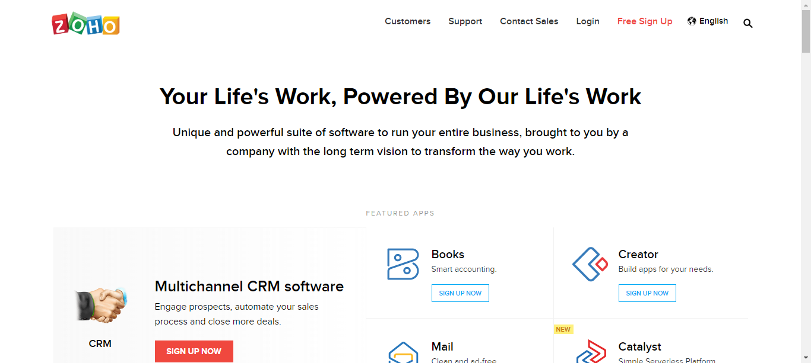

| Status | Timestamp | Details |
|---|---|---|
| cancel | 11:10:18 AM | Exception Occured:Click to see[sun.reflect.NativeConstructorAccessorImpl.newInstance0(Native Method)sun.reflect.NativeConstructorAccessorImpl.newInstance(NativeConstructorAccessorImpl.java:62) sun.reflect.DelegatingConstructorAccessorImpl.newInstance(DelegatingConstructorAccessorImpl.java:45) java.lang.reflect.Constructor.newInstance(Constructor.java:423) org.openqa.selenium.remote.W3CHandshakeResponse.lambda$new$0(W3CHandshakeResponse.java:57) org.openqa.selenium.remote.W3CHandshakeResponse.lambda$getResponseFunction$2(W3CHandshakeResponse.java:104) org.openqa.selenium.remote.ProtocolHandshake.lambda$createSession$0(ProtocolHandshake.java:123) java.util.stream.ReferencePipeline$3$1.accept(ReferencePipeline.java:193) java.util.Spliterators$ArraySpliterator.tryAdvance(Spliterators.java:958) java.util.stream.ReferencePipeline.forEachWithCancel(ReferencePipeline.java:126) java.util.stream.AbstractPipeline.copyIntoWithCancel(AbstractPipeline.java:498) java.util.stream.AbstractPipeline.copyInto(AbstractPipeline.java:485) java.util.stream.AbstractPipeline.wrapAndCopyInto(AbstractPipeline.java:471) java.util.stream.FindOps$FindOp.evaluateSequential(FindOps.java:152) java.util.stream.AbstractPipeline.evaluate(AbstractPipeline.java:234) java.util.stream.ReferencePipeline.findFirst(ReferencePipeline.java:464) org.openqa.selenium.remote.ProtocolHandshake.createSession(ProtocolHandshake.java:126) org.openqa.selenium.remote.ProtocolHandshake.createSession(ProtocolHandshake.java:73) org.openqa.selenium.remote.HttpCommandExecutor.execute(HttpCommandExecutor.java:136) org.openqa.selenium.remote.service.DriverCommandExecutor.execute(DriverCommandExecutor.java:83) org.openqa.selenium.remote.RemoteWebDriver.execute(RemoteWebDriver.java:545) org.openqa.selenium.remote.RemoteWebDriver.startSession(RemoteWebDriver.java:209) org.openqa.selenium.remote.RemoteWebDriver. org.openqa.selenium.firefox.FirefoxDriver. org.openqa.selenium.firefox.FirefoxDriver. pageObject.testcases.BaseTest.openBrowser(BaseTest.java:182) pageObject.testcases.LoginTest.loginTest(LoginTest.java:26) sun.reflect.NativeMethodAccessorImpl.invoke0(Native Method) sun.reflect.NativeMethodAccessorImpl.invoke(NativeMethodAccessorImpl.java:62) sun.reflect.DelegatingMethodAccessorImpl.invoke(DelegatingMethodAccessorImpl.java:43) java.lang.reflect.Method.invoke(Method.java:498) org.testng.internal.MethodInvocationHelper.invokeMethod(MethodInvocationHelper.java:86) org.testng.internal.Invoker.invokeMethod(Invoker.java:645) org.testng.internal.Invoker.invokeTestMethod(Invoker.java:822) org.testng.internal.TestMethodWithDataProviderMethodWorker.call(TestMethodWithDataProviderMethodWorker.java:75) org.testng.internal.TestMethodWithDataProviderMethodWorker.call(TestMethodWithDataProviderMethodWorker.java:14) java.util.concurrent.FutureTask.run(FutureTask.java:266) java.util.concurrent.Executors$RunnableAdapter.call(Executors.java:511) java.util.concurrent.FutureTask.run(FutureTask.java:266) java.util.concurrent.ThreadPoolExecutor.runWorker(ThreadPoolExecutor.java:1149) java.util.concurrent.ThreadPoolExecutor$Worker.run(ThreadPoolExecutor.java:624) java.lang.Thread.run(Thread.java:748)] |
| Status | Timestamp | Details |
|---|---|---|
| info_outline | 11:09:31 AM | Launched Browser : chrome |
| cancel | 11:10:53 AM | Exception Occured:Click to see[org.openqa.selenium.support.ui.WebDriverWait.timeoutException(WebDriverWait.java:95)org.openqa.selenium.support.ui.FluentWait.until(FluentWait.java:272) pageObject.PageObjects.BasePage.waitForPageToLoad(BasePage.java:50) pageObject.PageObjects.BasePage.openPage(BasePage.java:39) pageObject.PageObjects.ZohoHomePage.open(ZohoHomePage.java:21) pageObject.testcases.LoginTest.loginTest(LoginTest.java:28) sun.reflect.NativeMethodAccessorImpl.invoke0(Native Method) sun.reflect.NativeMethodAccessorImpl.invoke(NativeMethodAccessorImpl.java:62) sun.reflect.DelegatingMethodAccessorImpl.invoke(DelegatingMethodAccessorImpl.java:43) java.lang.reflect.Method.invoke(Method.java:498) org.testng.internal.MethodInvocationHelper.invokeMethod(MethodInvocationHelper.java:86) org.testng.internal.Invoker.invokeMethod(Invoker.java:645) org.testng.internal.Invoker.invokeTestMethod(Invoker.java:822) org.testng.internal.TestMethodWithDataProviderMethodWorker.call(TestMethodWithDataProviderMethodWorker.java:75) org.testng.internal.TestMethodWithDataProviderMethodWorker.call(TestMethodWithDataProviderMethodWorker.java:14) java.util.concurrent.FutureTask.run(FutureTask.java:266) java.util.concurrent.Executors$RunnableAdapter.call(Executors.java:511) java.util.concurrent.FutureTask.run(FutureTask.java:266) java.util.concurrent.ThreadPoolExecutor.runWorker(ThreadPoolExecutor.java:1149) java.util.concurrent.ThreadPoolExecutor$Worker.run(ThreadPoolExecutor.java:624) java.lang.Thread.run(Thread.java:748)] |
| cancel | 11:10:54 AM | Screenshot of failure |
| cancel | 11:10:54 AM | TEST CASE FAILED |
| info_outline | 11:10:54 AM | Login Test Completed |
| Status | Timestamp | Details |
|---|---|---|
| info_outline | 11:09:31 AM | Launched Browser : chrome |
| cancel | 11:10:52 AM | Exception Occured:Click to see[org.openqa.selenium.support.ui.WebDriverWait.timeoutException(WebDriverWait.java:95)org.openqa.selenium.support.ui.FluentWait.until(FluentWait.java:272) pageObject.PageObjects.BasePage.waitForPageToLoad(BasePage.java:50) pageObject.PageObjects.BasePage.openPage(BasePage.java:39) pageObject.PageObjects.ZohoHomePage.open(ZohoHomePage.java:21) pageObject.testcases.ValidateCRMTest.validateCRMTest(ValidateCRMTest.java:27) sun.reflect.NativeMethodAccessorImpl.invoke0(Native Method) sun.reflect.NativeMethodAccessorImpl.invoke(NativeMethodAccessorImpl.java:62) sun.reflect.DelegatingMethodAccessorImpl.invoke(DelegatingMethodAccessorImpl.java:43) java.lang.reflect.Method.invoke(Method.java:498) org.testng.internal.MethodInvocationHelper.invokeMethod(MethodInvocationHelper.java:86) org.testng.internal.Invoker.invokeMethod(Invoker.java:645) org.testng.internal.Invoker.invokeTestMethod(Invoker.java:822) org.testng.internal.TestMethodWithDataProviderMethodWorker.call(TestMethodWithDataProviderMethodWorker.java:75) org.testng.internal.TestMethodWithDataProviderMethodWorker.call(TestMethodWithDataProviderMethodWorker.java:14) java.util.concurrent.FutureTask.run(FutureTask.java:266) java.util.concurrent.Executors$RunnableAdapter.call(Executors.java:511) java.util.concurrent.FutureTask.run(FutureTask.java:266) java.util.concurrent.ThreadPoolExecutor.runWorker(ThreadPoolExecutor.java:1149) java.util.concurrent.ThreadPoolExecutor$Worker.run(ThreadPoolExecutor.java:624) java.lang.Thread.run(Thread.java:748)] |
| Name | Value |
|---|---|
| Automation Tester | Rahul Arora |
| Organization | Way2Automation |
| Build no | W2A-1234 |